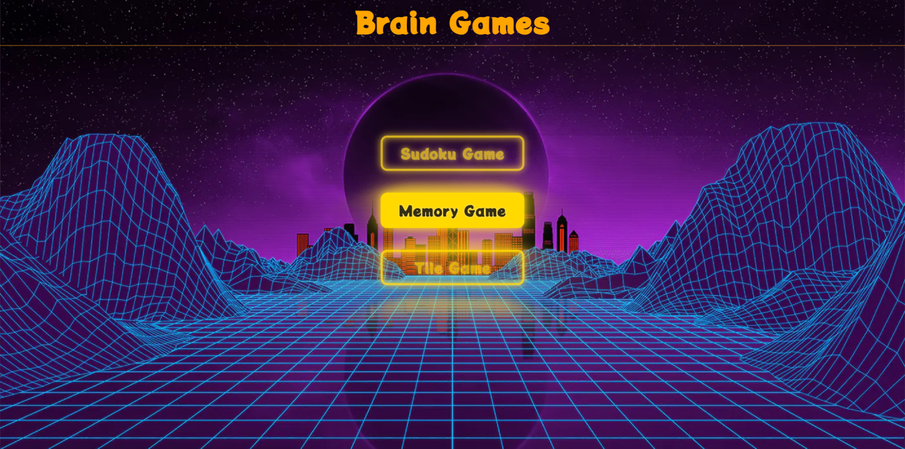
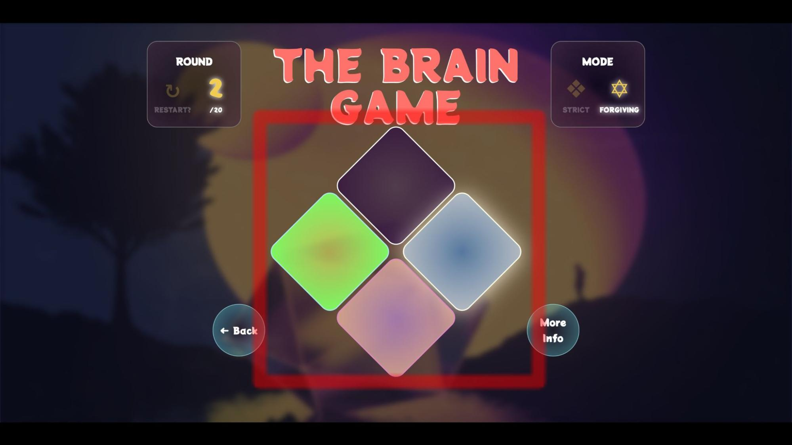
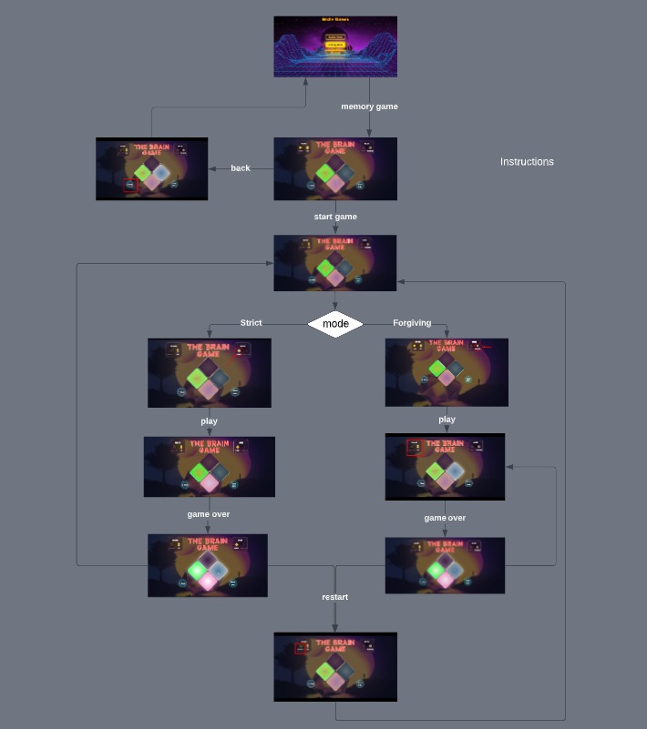
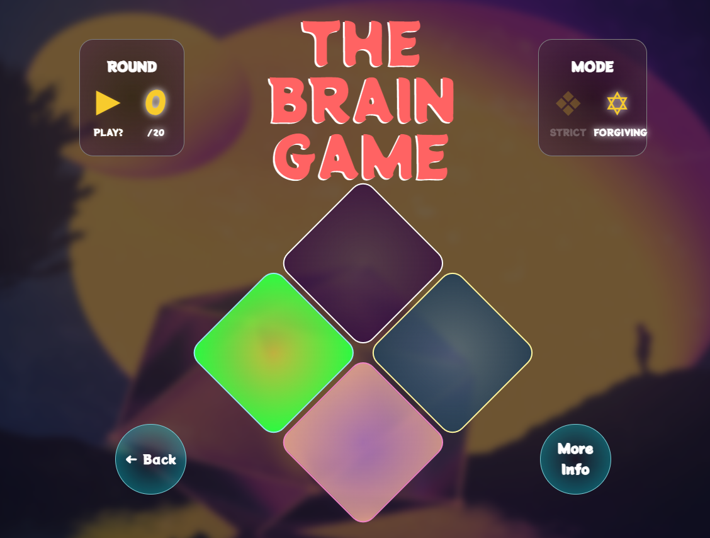
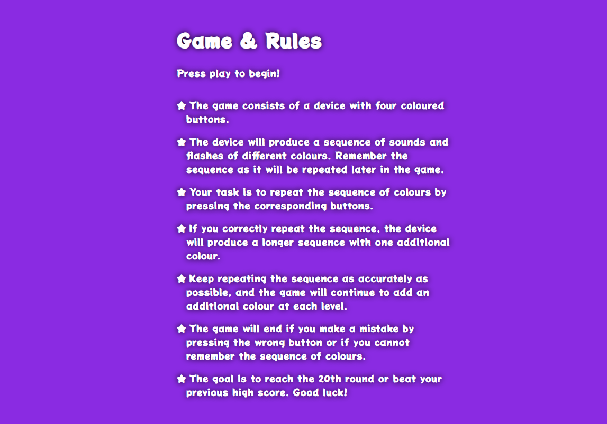
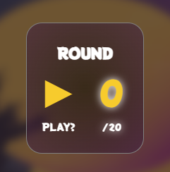
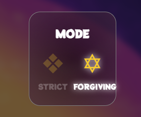
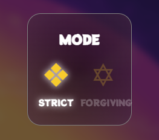
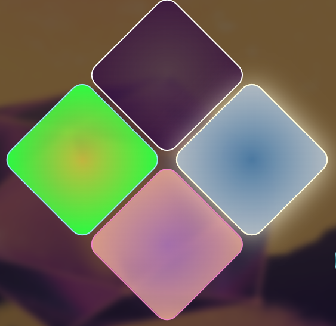

Simon Memory Game Redesign Report
CS 9552B, Human-Computer Interaction
Contents of the report
Executive Summary
Simon memory game is a popular electric game invented by Ralph H. Baer and Howard J. Morrison in the late 1970s. The game was named after the children’s game “Simon Says” which involved following a series of commands provided the leader, the leader being the Simon. Genesis of the game Simon was carried out on the aforementioned principle. This battery operated game took the toy stores by storm and every kid wished to have one on them and those that did manage to procure one played with it all day long. Even though, parents usually do not like their kids spending their time over playing trivial games but Simon was the exception because it was a memory sharpering tool disguised as a kid’s toy so they had no problem with their kids playing the game for as long as they want because it kept the kids at house under their supervision, did not harm them in anyway and instead made them smarter day by day.The artifact took a shape of circular device divided in four quadrants of different coloured buttons that used to light from the bottom and produce sounds (in some models) generating a sequence starting from one and the player would have to replicate the sequence colour by colour. If they succeed in doing so they would be presented with a new sequence which would be the older sequence concatenated with a random colour and the increasing total number of colours would be the score. However, if the player would make a mistake in replicating the sequence at any step, they would lose the game and would have to start all over again.
The game in question is so basic yet elegant in functionality that it got it’s own version of a digital interface because of it’s relevance, where the developers chose to go with a skeumorphic design and replicated the whole system just the way it used to come in a box in toy stores. This gave a nostalgic feeling while playing the game but after doing a deep dive, we realised it lacked a lot of crucial features that are common to other similar interfaces that would make the game more playable and up to date with modern standards such as ditching the skeumorphic design for a flat design, incorporating two game modes one being strict and other being forgiving with self explanatory names, that are described in detail in the latter part of the report along with other redesigns we implemented centred around HCI principles.
After we were done redesigning the game, it looked nothing like the original but better in every aspect and in order for our reader to get familiar with all those aspects we created a navigational map that acts as a guide and shows a clear path to navigate around the game and teaches about each and every element of the game in a graceful way.
In addition, we evaluated our game on the on the basis of the heuristic evaluation defined and displayed them in a dynamic manner with intuitive slider bars so that if the reader’s opinions on any of the parameters does not coincide with us because everything is subjective, they can change the rating of said parameter on their own and find a new heuristic rating on the spot. Finally, we suggested different ideas on how to take the game to an another level that can be implemented in the future to enhance user satisfaction even more.
Game Screen’s & Navigational Map
The game screens for our Memory Game goes are as follows:Homescreen

To access the Brain Game, users must click on it’s corresponding button among the three games present on the home screen.
Game Boot-Up screen

This is the First Screen we see after opening the game. Before we begin the game, we can play with the squares, which act as musical instruments and generate auditory feedback. Whenever the user is ready to start the game, he can click on the play button located on the top left menu.

This highlighted part shows the new redesigned Simon Board.
Playing Modes: Strict/Forgiving
Strict Mode

If the strict mode is enabled and the user makes a mistake in any forthcoming rounds, he has to start the game from the beginning i.e. round 1.
Forgiving Mode

If the forgiving mode is enabled and the user makes an error, he will get unlimited chances to get the round right and move on to the next one.
Play Game:

Playing the game is very fun and effotless. The game consists of a sequence of random buttons lighting up along with creating music equivalent to the round number. Once the sequence stops, the user is required to replicate the same pattern. If the user succeeds he progresses to the next round and and an additional random button is added to the previous sequence.However, if the user fails before reaching round 20 and accurately recalling the sequence, they lose the game. If the user manages to complete round 20 successfully, they win the game.
Game Over:

When the user fails to replicate the sequence in a round, squares will illuminate simultaneously and failure music will play in the background indicating the user he lost the round.
Complete Navigational Map

The image above represents the complete navigational map in a single image for the Simon Memory Game Redesign.
Redesign Information
Redesigns in the Game
This section of our report contains what redesigns and functionalities we have added to the Memory Game.
- We redesigned the entire user interface of the game and made it visually appealing, faster and minimalistic.
- We redesigned the entire simon board, now the board follows a non-skeuomorphic design whereas earlier the board was skeuomorphic.
- We changed the sound frequencies for simon board, now the game has a more clearer audio feedback which user can even listen at lower volumes.
- Implemented a Strict mode in the game, so that users who want to play the game as a challenge find it more engaging.
- Implemented a forgiving mode in the game, which basically allows users to not lose their progress if they get the current round wrong.
- Designed an Instructions page for the game through which user can understand how the game works.
- Implemented a restart button so that user can restart the game as per his convenience.
- When the user loses a round, the game now offers a visual cue too. Earlier it was just an audio which was played, now all the lights of the simon board light up along with the sound.
- The game now has a round counter, so that user can keep track of his progress in the game. Earlier there was no round counter at all.
- The game sounds get slightly faster as the number of rounds increases, making the game less frustrating than before.
- We added the functionality for user to play with the game with keyboard or mouse. Earlier game could only be played using a mouse.
Redesign Principles Used
This section of our report contains the Human-Computer Interaction Principles we have used to redesign our game.Parts of this section are interactive, please hover over highlighted words to see the images- Consistency : refers to the principle of designing user interfaces that are consistent and predictable in their appearance and behavior. This includes using consistent visual design elements, such as colors, fonts, and layout, as well as consistent interaction patterns, such as the placement of buttons and menu items. We have ensured consistency throughout the game by implementing a standardized color scheme, font & signs across all elements of the game.Consistency
- Visibilty: Visibility refers to the degree to which the status and outcomes of an action or operation are observable or perceivable by the user. Visibility is an important design principle in HCI as it helps to reduce confusion, errors, and frustration among users by providing them with clear and consistent .Theinstructionsprovides users with a visible indicator of their progress in the game, allowing them to track their performance and set goals for improvement.round counter
- Recognition Over Recall Design: This principle emphasizes the importance of making information and interface elements easy for users to recognize rather than relying on them to remember details from memory. The game’s sounds and interface elements are redesigned to be easily recognized, reducing the cognitive load on users.
- Flexibility: Flexibility refers to the principle of designing systems that can adapt to the varying needs and preferences of users. This includes providing customizable interfaces, offering multiple options and alternatives, and accommodating diverse user contexts and environments. We have implemented the feature on the game, where the strict mode would restart the game from the first round when the user makes an error while forgiving mode would give the user another try to play the current level and get it right.strict/forgiving mode
- Error Prevention: The game allows for some degree of inaccuracy in , which can prevent user frustration and keep them engaged. This tool can help users who are more prone to making mistakes or who are still learning the game. Alternatively, for those who desire a more demanding experience, the strict mode retains the original challenge.forgiving mode
- Learnability: Learnability refers to the ease with which a person may learn to utilise a new system or interface. It is critical for assuring user happiness and reducing annoyance and mistakes. For novice players, the presence of a forgiving mode may make the game easier to learn. Users can begin with the more lenient option to become acquainted with the game’s mechanics before progressing to the strict mode as they gain confidence in their abilities. Additionally, the implementation of an further improves learnability.instructions page
- Chunking: “Chunking” refers to the process of breaking down information into smaller, more manageable units, or “chunks”. Chunking is commonly used in UI design, particularly in the organization and presentation of content, such as menus. By chunking information, designers can improve the user experience by making it easier and more efficient for users to interact with the system. We added in one chunk,play button & current roundin a different chunk and instructions in another chunk so that every type of information is conveyed efficiently.modes available
- Reduced Cognitive Load : Cognitive load refers to the total amount of mental effort or processing capacity required to learn new information or perform a specific task.We have used and have also used chunking in menus to reduce the cognitive load of the user. We also have made a flat design for our simon board to further reduce cognitive load.semiotic signs
- Improved Feedback: Feedback in HCI is the response or information provided by a system or interface to a user’s actions. Feedback is important for enhancing the user experience and helping users make informed decisions. When the user hovers on a box, and when they click on it, it generates a sound giving clear feedback on how the buttons are supposed to be used.it glows
- Efficiency: Efficiency refers to the ability of a user interface or system to enable users to accomplish their tasks or goals quickly, accurately, and with minimal effort. Eliminating lag helped us ensure that the game responds quickly to user input, providing a more enjoyable and seamless experience.
- Accessibility: When something is designed to be used by as many people as possible, including those with impairments, it is said to be “accessible.” By enabling users to play the Simon game using both a keyboard and a mouse, we increased accessibility while serving a wider spectrum of users and their chosen interaction styles.
- User control and freedom: It refers to the idea that users should be able to easily control and navigate the system, and that they should be given the freedom to make choices and take actions without feeling constrained or limited by the system’s design.The addition of a gives players more control over their experience, allowing them to start over whenever they wish.restart button
Heuristic Evaluation
Based on the course material and what we have learned in the HCI subject, we propose the below-mentioned Evaluation Heuristic.Heuristic Evaluation by User Goals (HEUG):
The HEUG method is a thorough heuristic evaluation strategy for assessing a design’s user experience. Efficiency, learnability, mistake avoidance and recovery, adaptability, emotional experience, feedback and communication, consistency and accessibility are just a few of the eight factors it takes into account. Designers can get a thorough grasp of the user experience and pinpoint specific areas for improvement by analysing a design using these criteria. The HEUG approach is made to be adaptable so that it can be used to meet the needs of various projects and assessors. The HEUG method also goes above and beyond other heuristic evaluation approaches by taking emotional experience into account. The HEUG method has the following steps:
- Define the evaluation criteria: The eight HEUG method parameters are included in the criteria, which must first be defined. The criteria should be unique to the project and developed to satisfy the requirements of the users.
- Gather evaluators: Putting together a group of assessors to examine the design is the next step. These assessors ought to be HCI specialists with in-depth knowledge of the project and the intended audience.
- Conduct the evaluation: The evaluators should review the design and evaluate each of the parameters in accordance with the evaluation criteria. Also, the assessors must make notes and offer feedback for each metric.
- Assign ratings: Each parameter should receive a rating from the evaluators according to a scale. All assessors should agree on the ratings, which must be based on the evaluation criteria.
- Analyze the results: After the evaluation is finished, the findings should be examined to determine the design’s strong and weak points. The evaluations made by the evaluators and the comments made should both be considered in this study.
- Provide recommendations: The evaluators should offer suggestions for enhancing the design based on the outcomes analysis. The goal of these suggestions should be to enhance the user experience, and they should be specific and doable.
- Iterate and re-evaluate: Based on the suggestions made, the design needs to be revised and improved. Repeat this procedure as necessary to ensure that the design meets user requirements and offers the best possible user experience.
Rating Scale Of HEUG
The HEUG method rating scale is a numerical scale that is used to evaluate each of the eight parameters based on a specific set of criteria. The scale ranges from 1-5, with 1 being poor and 5 being excellent. Each parameter receives a rating depending on how well the design meets the parameter’s assessment requirements. The HEUG rating system is broken out as follows:
- Poor: The parameter is not addressed or is addressed poorly. The user experience is significantly hindered by this parameter.
- Below Average: The parameter is addressed but is not executed well. The user experience is negatively impacted by this parameter.
- Average: The parameter is addressed sufficiently but could use improvement. The user experience is satisfactory but not exceptional in this parameter.
- Above Average: The parameter is addressed well and enhances the user experience. The user experience is positively impacted by this parameter.
- Excellent: The parameter is addressed exceptionally well and significantly enhances the user experience. The user experience is outstanding in this parameter.
- Efficiency: This metric is concerned with how fast and easily users can use the interface to carry out their tasks. While assessing an interface, take into account its usefulness, speed of navigation, and labelling clarity. This entails evaluating how quickly users can carry out tasks, locate what they’re searching for, and use the interface.
- Learnability: This measure looks at how easy it is for users to acquire used to the interface. Assess the interface’s consistency, usability, and availability of resources for assistance. This involves evaluating how easily users can understand the interface, how fast they take up using it, and how well the design supports their mental models.
- Error Prevention and Recovery: This metric focuses on how effectively the user interface prevents problems and provides means for users to fix them. Verify the user interface (UI) for components like undo/redo capabilities, clear error warnings, and understandable feedback. This is evaluating how well the user interface guides users in avoiding errors, how quickly and simply users may bounce back from failures, and how well the user interface prevents user frustration or confusion when errors occur.
- Flexibility: This criterion focuses on how well the interface takes into account the various demands and preferences of users. Consider the customization possibilities, accessibility, and interoperability with other platforms or devices while evaluating the interface. This involves assessing how well the interface accommodates various user requirements and preferences, functions on a variety of hardware platforms, and changes to accommodate various user circumstances.
- Emotional Experience: This parameter focuses on how the interface affects the user experience. Take into account the attractiveness, personality, and degree of emotional engagement of the interface. A portion of this is assessing how well the user interface conveys the identity or personality of the product or service, makes an emotional connection with the user, and produces a positive emotional experience for consumers.
- Feedback and Communication: This measure looks at how well the user interface informs users and provides feedback on their activities. Think about how responsive the interface is, how it responds to user input, and whether there are resources available to help. This entails evaluating how well the interface updates the user on its state and progress, how well it responds to inputs from and actions carried out by the user, and how well it provides the user with valuable information when necessary.
- Consistency: This parameter evaluates the consistency of the behaviour and layout of the interface. Visual coherence, interaction pattern coherence, and terminology coherence are all things to look for in an interface. In order to do this, one must evaluate how well the interface makes use of standardised visual elements, interaction styles, and processes, as well as standardised language usage and labelling.
- Accessibility: This parameter’s primary focus is on the interface’s usability for users with different skills and limitations. The usability of the interface for users with different requirements, adherence to accessibility guidelines, and support for assistive devices should all be taken into account. This involves evaluating the interface’s usability for users with visual, auditory, motor, and cognitive impairments as well as how well it complies with accessibility guidelines like WCAG and provides alternative modes of engagement.
Rating Memory Game Redesign on HEUG:
Evaluation of the Memory game redesign based on the aforementioned HEUG principles are as follows:
NOTE: This section has interactive sliders for the readers to evaluate according to their will.- Efficiency : The game provides the user with a fast and seamless experience. There are no major delays in gameplay, and the buttons respond promptly to the user’s touch. The efficiency grade is “Excellent”.
- Learnability : The game’s regulations and instructions are clear and simple to follow, with a separate page explaining how to play. The interface of the game is also fairly simplistic and minimal as well. The learnability grade for simon memory game is “Above Average”.
- Error Prevention and Recovery : The game includes two modes that offer varying levels of forgiveness for errors, preventing the user from becoming overly frustrated if they make a mistake. Furthermore, when the user makes a mistake, the game provides clear feedback, enabling them to learn from their mistakes. “Above-Average” is the ranking for error prevention and recovery.
- Flexibility : The game has two modes strict and forgiving mode to make sure that the user is allowed to be flexible based on their preferences and ability level.The game can also be played using either keyboard or mouse making the game more flexible. Therefore, “Above Average” is the grade for flexibility.
- Emotional Experience : The game’s design and visual effects provide the player with an engaging and enjoyable experience. The use of colours, the 3D impact and the addition of new game modes make the game more visually appealing and stimulating. “Excellent” is the grade for emotional experience.
- Feedback and Communication : The game provides the user with clear and immediate feedback, such as showing which level they are on and when they make a mistake. The feedback is constant across the game’s modes, making it simple for the user to understand their progress. The feedback and communication rating is “Excellent”.
- Consistency : The game keeps a consistent design and layout throughout, making it simple to navigate and comprehend. The buttons and actions are consistent across all modes, which minimises customer confusion. The consistency grade is “Excellent”.
- Accessibility : Although the user has the option to play the game from either the keyboard or mouse but due to lack of any enhancements for people with various abilities and disabilities the overall accessibility of the game remains relatively low. Hence the rating for accessibility is “Average”.
The score for efficiency is 5.00
Total Heuristic score 4.38
The score for Learnability is 4.00
Total Heuristic score 4.38
The score for Error Prevention and Recovery is 4.00
Total Heuristic score 4.38
The score for Flexibility is 4.00
Total Heuristic score 4.38
The score for Emotional Experience is 5.00
Total Heuristic score 4.38
The score for Feedback and Communication is 5.00
Total Heuristic score 4.38
The score for Consistency is 5.00
Total Heuristic score 4.38
The score for Accessibility is 3.00
Total Heuristic score 4.38
Future Plans on Further Redesign
This section contains information about future redesign plans for simon memory game based on the heuristic evaluation.- We can include an interactive instructional mode within the game to increase the learnability. This lesson would walk new users through the entire game. By including this feature, players will be able to play the game more effectively and enjoy it more in the long run.
- We can add a feature that allows users to pause the game at any time without losing their progress between rounds to further increase the flexibility of the game. Those who might need to take a break during gameplay or those who might need to attend to other chores while playing the game may find this option to be especially helpful. To ensure that the user’s progress is always saved and they may resume playing if they must quit the game suddenly, we can also create an auto-save function that automatically saves the user’s progress at certain intervals. By adding these features, we can provide players more freedom and convenience, improving the game’s flexability.
- To make the game more accessible, we can ensure compliance with accessibility standards like WCAG, and provide alternative methods of interaction, such as voice commands or touch gestures. We should also optimize the game for users with visual, auditory, motor, and cognitive impairments by incorporating features like text-to-speech, adjustable font sizes, and high-contrast color schemes.
- We can improve the Error Prevention and Recovery of the game by including an undo/redo functionality when the user makes an error. Additionally, we can add a hint button for user, if the user does not remember the current tile. These features will help us enhance Error Prevention further.